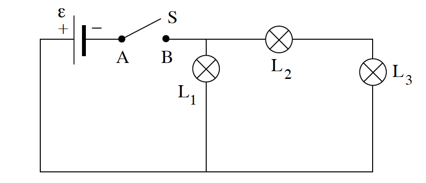
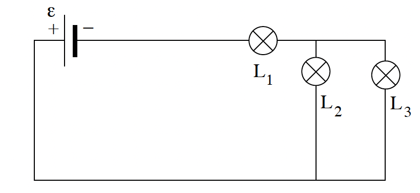

שאלה 3
בפעילות במעבדה עומדים לרשות התלמידים הרכיבים האלה:
- ספק שהכא"מ שלו הוא ε = 6V וההתנגדות הפנימית שלו זניחה.
- שלוש נורות זהות, L1, L2, L3. הניחו שבמהלך הניסוי ההתנגדות של כל אחת מהנורות קבועה.
- מפסק S.
- תילים שההתנגדות שלהם זניחה.

התלמידים מחברים את המעגל המתואר בתרשים א. קבעו מה המתח בין הנקודות A ו-B כאשר המפסק פתוח (לא זורם זרם במעגל). נמקו. (6.33 נקודות)
סוגרים את המפסק S. חשבו את המתח על כל אחת משלוש הנורות במעגל שבתרשים א. (7 נקודות)
בהמשך, התלמידים מחברים את המעגל המתואר בתרשים ב.

דרגו את הנורות במעגל המתואר בתרשים ב לפי עוצמת האור שהן פולטות, מהעוצמה הנמוכה לעוצמה הגבוהה. נמקו. (7 נקודות)
מוציאים את הנורה L3 מהמעגל המתואר בתרשים ב.
האם עוצמת הזרם דרך הנורה L1 תגדל, תקטן, או לא תשתנה? נמקו את תשובתכם (בלי לחשב).
האם עוצמת הזרם דרך הנורה L2 תגדל, תקטן, או לא תשתנה? נמקו את תשובתכם.
על כל אחת מהנורות L1, L2, L3 רשום: 6V, 9W. האם בתרשים ב, ההספק של נורה L1 יהיה קטן מ-9W, שווה ל-9W או גדול מ-9W? נמקו את תשובתכם. (7 נקודות)